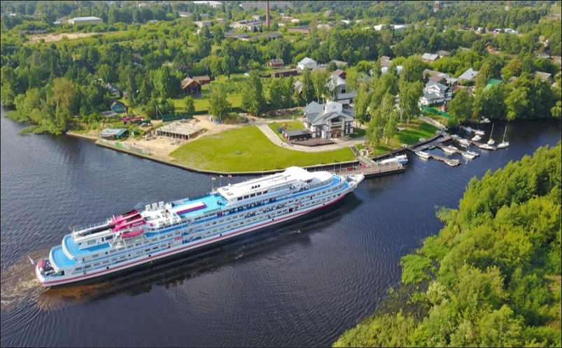
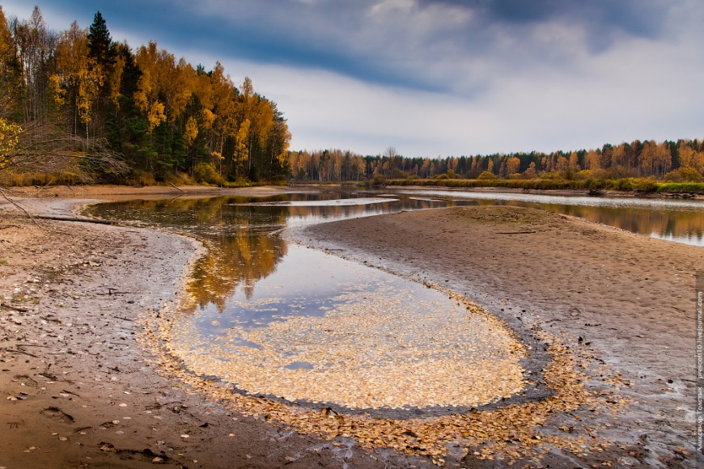
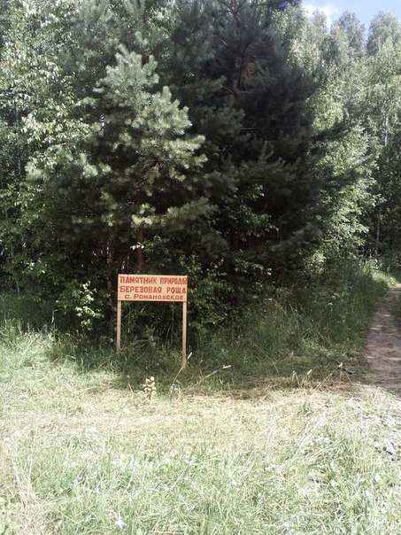

Весьегонск
1. Рыбинское водохранилище
Образовано в 1940 году плотинами рыбинской ГЭС
Ры́бинское водохрани́лище — большое водохранилище на реке Волге и её притоках Шексне и Мологе. Расположено в основном в Ярославской области, на северо-западе, частично также в Тверской и Вологодской областях.
Площадь: 4 580 км² Длина: 110 км Средняя глубина: 5,6 м Высота поверхности над уровнем моря: 102 м
Виды рыб: Европейская корюшка, Синец, Обыкновенный судак, Речной окунь
2. Болота
В Весьегонском районе расположены самые низкие в области абсолютные высоты (105 - 110 см.). Моренные холмы высотою от 5 до 7 м встречаются редко, понижения в рельефе часто заболочены, заняты озерами, которые быстро зарастают, поэтому здесь много болот ( более 40). Некоторые имеют статус памятников природы и являются государственными природными заказниками.
Самые крупные: Лекомская Дача, Самуйловское, Чембровское, Юрьевское.
Лекомская Дача – это группа болот, объединенная общим названием. В основном это верховые болота с участками переходных болот. Самуйловское болото – одно из крупнейших болот. Чембровское - верховое торфяное болото.
3. Романовская березовая роща
Берёзовая роща находится в деревне Романовское. Площадь - 1,5 га.
Имеет природоохранный статус памятника природы.
Роща была посажена до 1917 года. Там находилась вотчинная контора баронов Дюклу.
Раньше жители так и называли рощу - "Кантора".
Некогда в березовой роще кипела бурная жизнь. В ней проводились колхозные гуляния после посевной, на Троицу устраивались концерты и торговля, ДК и библиотека проводили досуговые мероприятия для взрослых и детей. В народе ходила легенда о том, что в старые времена был вырыт подземный ход от Преображенской церкви в селе Никола-Высока до валуна, который лежит в центре рощи.